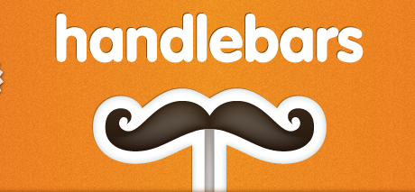
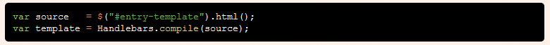
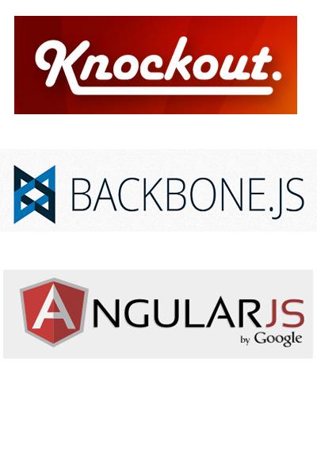

Desarrollo Web en el 2012.
¿De que se trata?
Técnicas, herramientas y buenas prácticas para aumentar la productividad
- Crear productos increibles
- Disfrutarlo!!!
- Minimizar las tareas aburridas
- Apropiarnos de nuestras herramientas
Tu Workflow determina tu satisfacción o frustración
- La importancia del editor
- Power tools ( Librerías, herramientas )
- Iterar rápido
Desarrolladores y Escritores
(Con muchas cosas en común)
- Es un proceso creativo
- Bloques productivos más pequeños
- Nadie puede codificar por 8 horas seguidas
- La primera versión por lo general es mala.
- La clave: Refactoring frecuente, iteraciones rápidas
Para leer
Coding: It's just writing,
Coding Should Be Like Writing A Book
Editores
| Hechos para la Web |
Hardcore |
IDE's tradicionales |
- Sublime Text
- WebStorm
- Aptana
- Cloud9
|
|
- Visual Studio
- Eclipse
- ...
|
Editores: Lo realmente importante
La decisión del editor no es tan importante
como es saberlo usar y conocerlo muy bien.
- ¿Como creo Snippets?
- ¿Hago uso de plugins útiles?, ¿Son fáciles de instalar?
Zen-Coding
- ¿Que tan facil es escribir mis propios plugins?
- ¿Conozco los Shortcuts?
- ¿Puedo integrarlo facilmente en mi workflow?
Power Tools para Desarrolladores Web
(Bootstrap)Iniciando con buenos fundamentos
¿Para que sirve un Bootstrap?
- Buenas prácticas incluidas desde el inicio
- Utilidades (Grids, componentes)
- Muchas horas de trabajo ahorradas
- Soporte para distintos dispositivos sin (mucho) esfuerzo adicional
Algunas cosas que son posibles con LESS
- "Quiero que el color del encabezado sea 10% mas oscuro que el del texto de parrafo"
- "Quiero que el margen de ciertos elementos X
sean 3 veces mas grandes que el de ciertos elementos Y,
aunque no estén uno dentro de otro
- "Quiero reutilizar variables! (tamaños, colores)"
¿Como funciona?
Puede usarse en tiempo de ejecución aunque no es recomendado
Es mejor utilizar alguna herramienta que permita compilar y generar archivos CSS puros
Más Templates, menos spaghetti

¿Qué són? ¿Porqué usarlas?
Son librerías que permiten cargar dinámicamente
fragmentos html e inyectarlos en nuestra aplicación Web.
Soportan características típicas de un lenguaje de plantillas.
(tokens, condicionales, etc).
- Repetir el mismo Markup para cada ítem de la lista
- Sin crear el HTML desde el código!

Librerías para organizar la arquitectura de nuestra aplicación Web
- http://backbonejs.org/
- http://knockoutjs.com/
- http://angularjs.org/
|

|
NodeJS es util incluso si su aplicación no corre sobre NodeJS
Otros usos
- Automatizar (Build)
- Descargar utilidades (Ej.Compilador coffeescript usando npm)
- Es facil crear scripts si usted conoce javascript
NodeJS
←
→
/
#